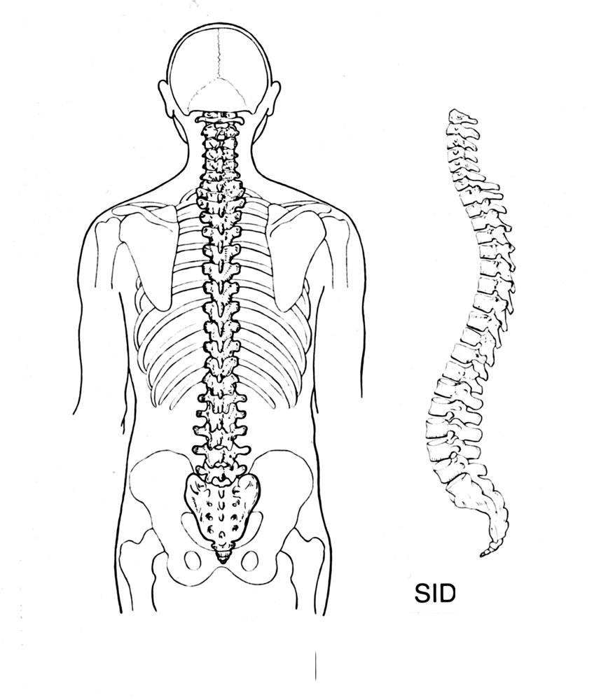
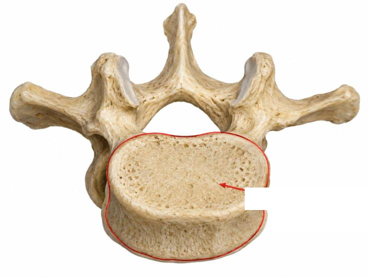
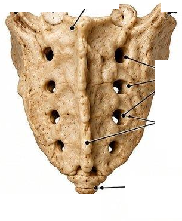
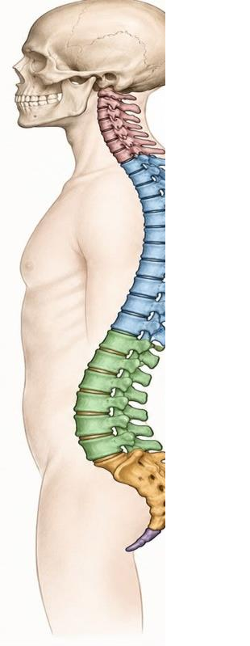
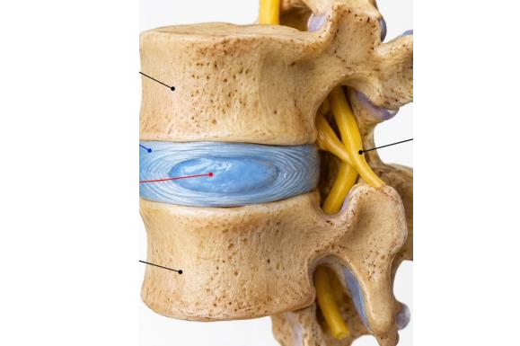

🦴 Explorateur Anatomique (Photos Réelles)
Cliquez sur un point numéroté sur la photo. Les noms sont masqués : demandez à un camarade de deviner, puis cliquez sur « Afficher le nom » !





Structure ciblée
🔒 Nom masqué
📖 Description & Morphologie
Sélectionnez un point numéroté sur la photo pour afficher sa description morphologique.
⚡ Rôles & Notions Clés du Cours